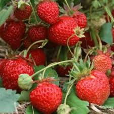
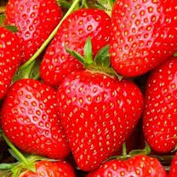

Les différentes variétés de fraises
Il existe de nombreuses variétés de fraises, parmi lesquelles
Les taille des fraises selon les variétés
La gariguette
Mesure entre 2 et 3 cm de long.
La mariguette
Mesure entre 3 et 4 cm de long
La cléry
Mesure entre 4 et 5 cm long